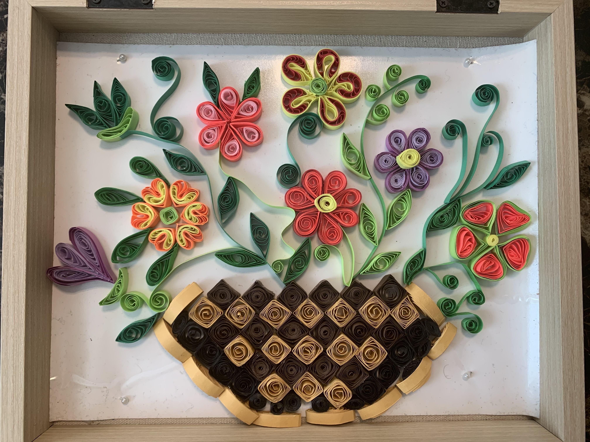
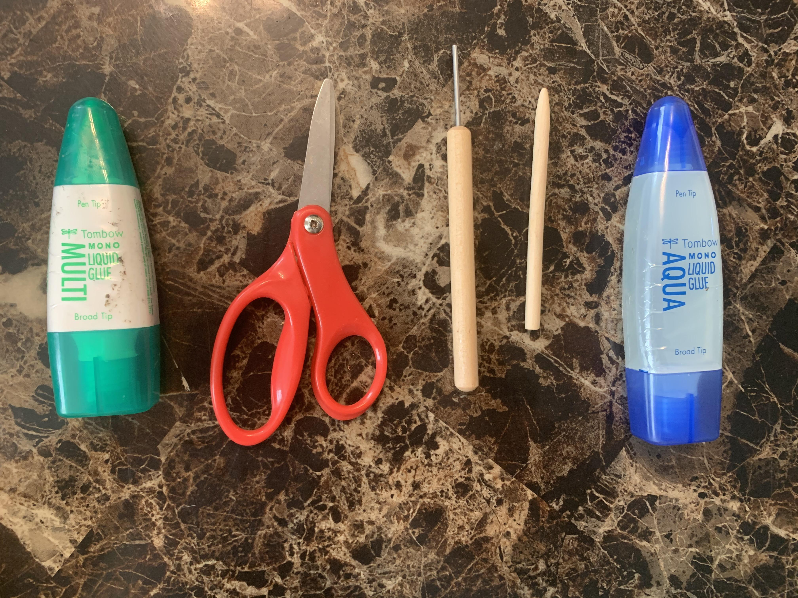

My name is Amirah Munad and I like Paper Quilling. Paper quilling is an art done by coiling, rolling, shaping and glueing together narrow paper strips. Paper is manipulated in many creative ways to make different shapes which are used to decorate greeting cards, pictures, boxes, jewelry, purses, baskets, coats, etc. It is believed that this art was originated in Ancient Egypt to imitate the ironwork of the day. This art form was later revived during European Renaissance and was used to decorate book covers and religious items. It is popular nowadays among crafters who like to create 3D miniature art forms.

In all that time paper quilling process remained almost same, but many different and intricate designs have been introduced along with specialty tools and supplies. Nowadays paper quilling is incorporated into cardmaking, scrapbooking, monograms, paper flowers, paintings, jewelry and into wall art. I find it facinating and enjoyable to create shapes and patterns from simple paper strips and glue to make novelties and masterful wall art. I got interested in quilling two years ago when I was first introduced to it in a crafter's meetup. Soon my interest change into passion and since then I am driving this passion with dedication and deligence. I think it suits me as I am detail oriented and passionate about it. It depend on every individual how much effort, time and dedication anyone can invest in it and the end result depend on it too. The final art piece could range from simple greeting card to intricate paper mosaics or sculpture.
Quilling Tools and Supplies
This is the only craft for which you do not need to buy any supplies. To begin paper quilling you do not need any sophisticated tool or supplies. You can use simple paper strips, glue, a round skewer or toothpick, or any round and cylindrical shape object for rolling paper. Now a days you can buy a simple slotted quilling tool for less than five bucks and start practicing.

You need to cut thin strips of paper using ordinary computer paper with scissors.Insert a piece of quilling paper into the slot of quilling tool or wrap it around round skewer from one end and start rolling. you need to roll the tool or skewer with your hand not the paper as it will give better result. Hold the paper strip with your other hand. When you reached the end of the strip, place a small amount of glue near the end of the strip and roll to complete. Remove it from the tool or skewer and do not allow it to expand too much. This will make a simple circle which is the first step in order to creat other shapes and designs.